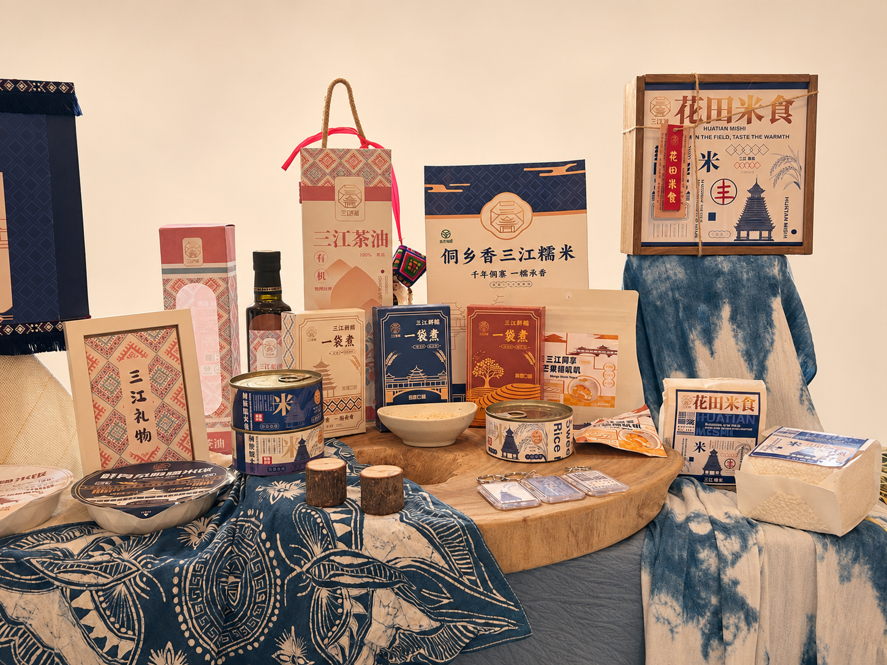
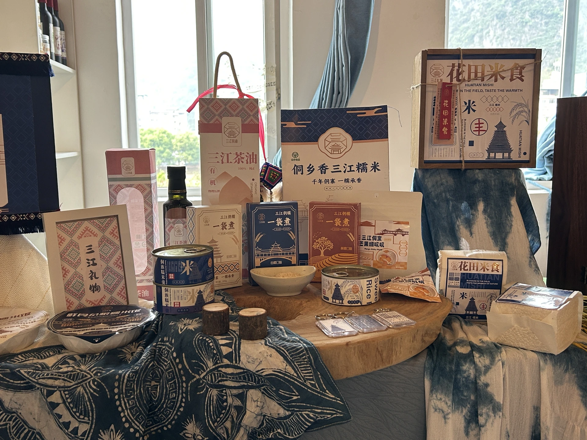
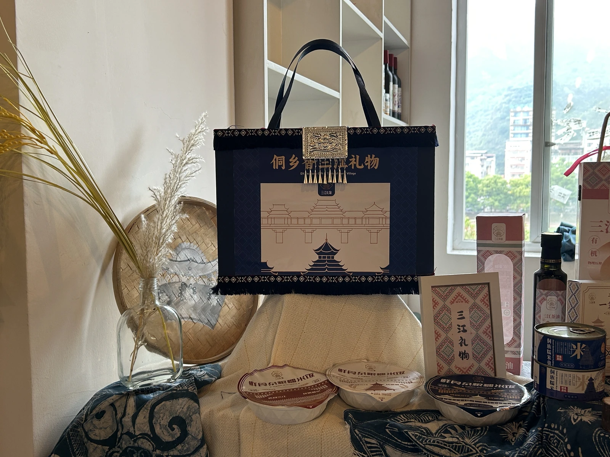
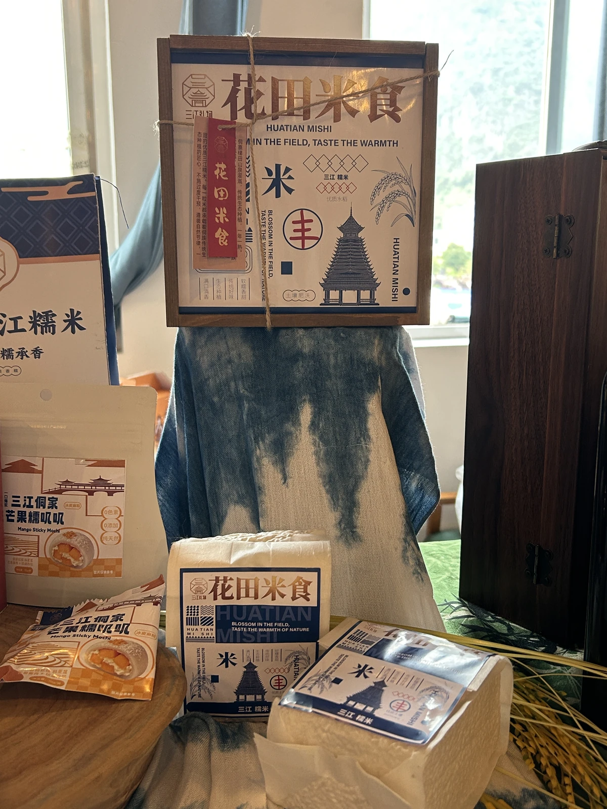
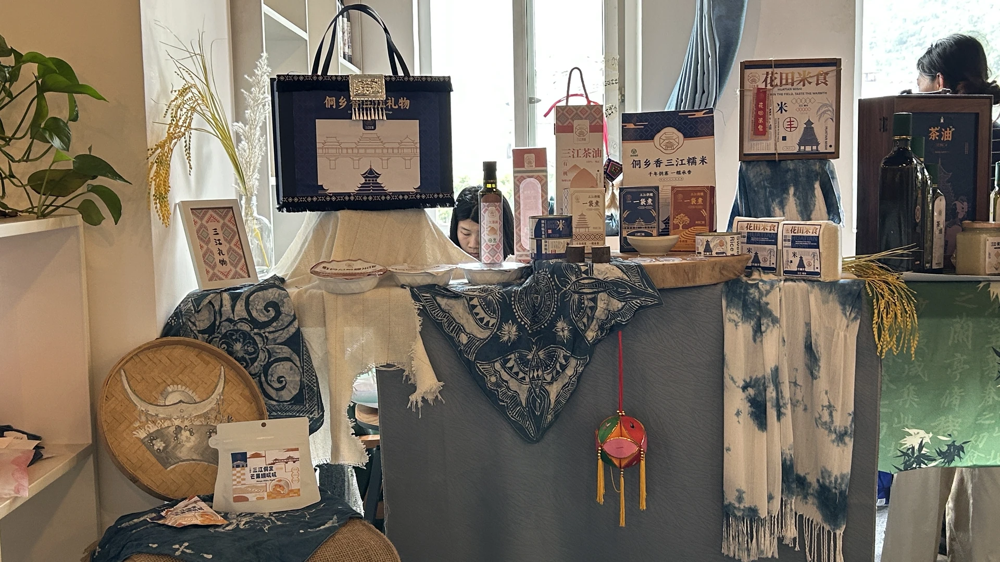

包装实物与展陈
从礼袋、罐身和碗盖，到盒装与米袋，观察同一组建筑线条和纹样在不同尺寸上的应用。






从三江到包装
以鼓楼轮廓和侗族几何纹样建立识别，再用靛蓝、米白与金棕把不同包装串成一个系列。
- 文化线索
- 风雨桥、鼓楼、侗族纹样与稻田意象。
- 识别设计
- 将建筑轮廓、稻穗插画和连续纹样应用到标志、标签及包装版面。
- 系列应用
- 家庭米袋、便捷煮食盒、碗装、罐装、零食袋、礼盒与周边。
原设计展板
从品牌溯源、标准色与插画，到包装展开图和应用效果。点击图片可放大，效果图保留原有 AI 标注。